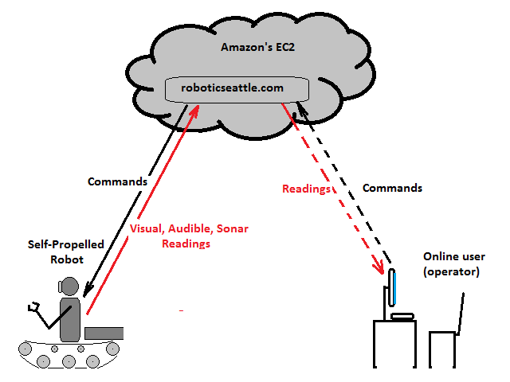

It is hard to over-estimate the value proposition given by the thrifty compact energy-saving single board computers like 'Raspberry Pi', 'BeagleBone Black' or 'ODROID-C1+'. These micro-computers are absolutely superb when it comes to providing some level of intelligence to the robotic systems powered by the on-board power sources. However we must admit that the ARM processors happen to be inadequate to handle the heavy computational tasks like the computer vision (CV) and speech recognition. That's why the ability to connect to the cloud to offload some of the number crunching jobs to the grid becomes absolutely vital. In the diagram below the robot is connected to the cloud where the information read by sensors is sent to. The software deployed on the cloud's virtual machines can discern the data received and come up with the plan of action that will be sent back to the robot. The life-operator can also engage into the decision making process. Right now the robot and the operator are connected via the cloud that makes it look like a triangle. However it is also possible to envision the direct connection between two points thus reducing the latency of communication between the remote machine and a person.
